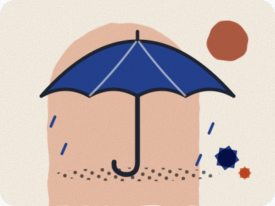

Prepare with current information
Safety depends on circumstances. This guide helps you find current advice and prepare your own plan.

Editorial preparation guide · Updated 8 Oct 2026 · No local field checks claimed.
Start with your government’s advice
Read the current destination advice issued by your government and check that it covers the places and activities in your itinerary. The UK FCDO publishes Morocco guidance, including safety, health and entry information; entry advice may be nationality-specific.
For US citizens, the State Department’s advisory for Morocco is Level 2, “Exercise increased caution”, reissued 21 April 2025 Source-checked 28 Sep 2026 Sources. That is the US government’s rating, not ours: read the advisory in full.
Prepare for your actual trip
Save your accommodation contact and relevant assistance details. Check that your insurance covers your planned activities and circumstances. Share practical arrival plans with a trusted person if that is useful to you.
Avoid blanket labels
We do not score neighborhoods as safe or unsafe. Ask about the exact route, arrival time and access arrangements, and consult current government guidance when conditions change.
When you need immediate help
Contact the appropriate local emergency service or seek assistance from nearby staff or authorities. This website is not monitored for emergencies.
Go to the source
UK FCDO: current Morocco travel advice
Source reviewed 21 September 2026. Consult your own government’s advice as well.
Something looks wrong?
See our contact and corrections status. Confirm changing details with the source or provider before relying on them.
One useful next step.
Keep your preparations in one place.
Sources for this page
Every fact on this page shows when it was checked and links here to its source. What the badges mean.
- US travel advisory, Morocco: US State Department. Reviewed 28 Sep 2026.